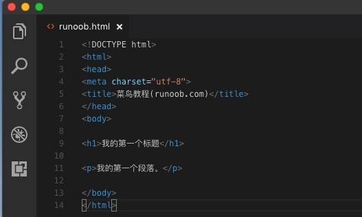
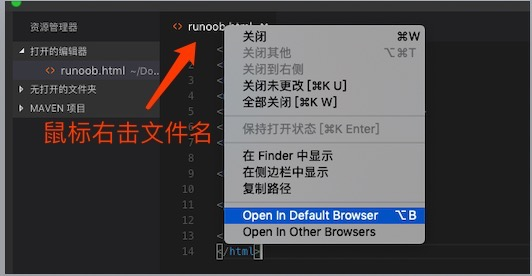
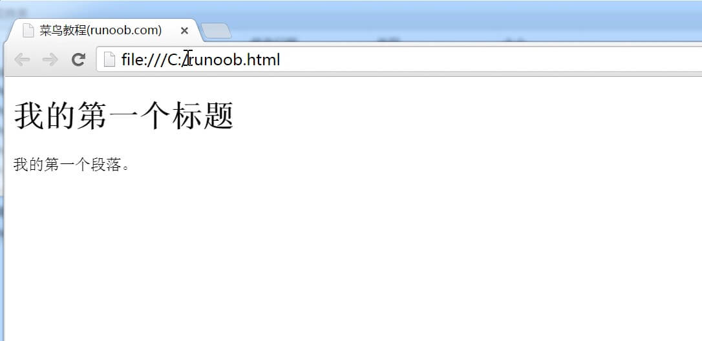
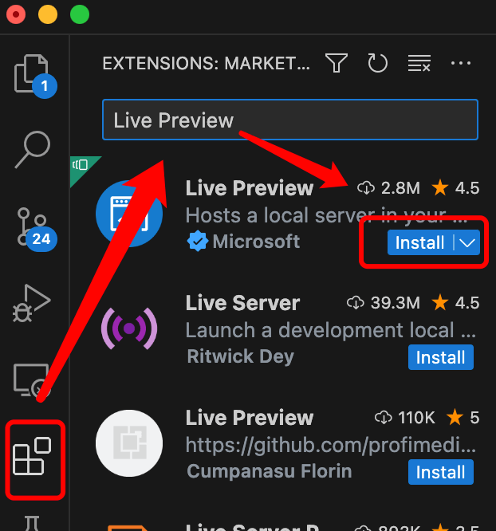
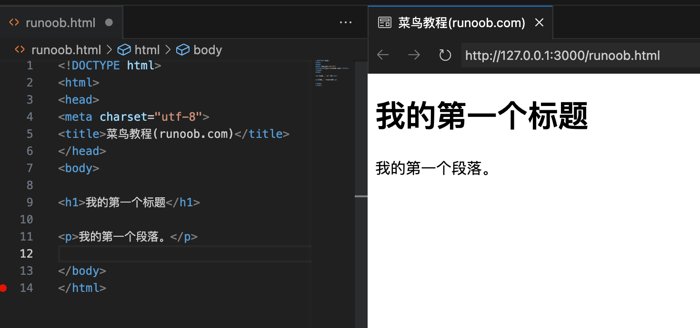

HTML エディタ
HTMLエディタのおすすめ
プロのHTMLエディタを使ってHTMLを編集できます。よく使われるエディタをいくつかおすすめします：
上記のソフトウェアの公式サイトから対応するソフトウェアをダウンロードし、手順に従ってインストールしてください。
オンラインエディタも利用できます：https://www.jyshare.com/front-end/61/
次に、VS Codeツールを使ってHTMLファイルを作成する方法をデモします。
VS Code
Visual Studio Code（略称 VS Code）は、マイクロソフトが開発し、Windows、Linux、macOSなどのオペレーティングシステムをサポートするオープンソースのコードエディタです。エディタには拡張機能を管理する機能が組み込まれています。
VS Codeのインストールチュートリアルはこちら：https://www.example.com/vscode/vscode-tutorial.html
ステップ1: HTMLファイルを新規作成
VS Codeのインストールが完了したら、「ファイル(F)->新しいファイル(N)」を選択し、新しいファイルに以下のコードを入力します：

ステップ2: HTMLファイルとして保存
次に「ファイル(F)->名前を付けて保存(A)」を選択し、ファイル名を サンプル.html にします：

HTMLファイルを保存するときは、.htmを使用することもできます.html拡張子。両者に違いはありません。完全に好み次第です。統一して使用することをお勧めします.html。
覚えやすいフォルダーにこのファイルを保存します。例：サンプル
ステップ3: ブラウザでこのHTMLファイルを実行する
次に、エディタ上のファイル名を右クリックし、「デフォルトブラウザで開く」を選択します（他のブラウザでも可）：

注：vscodeでブラウザを使用してhtmlファイルを開くには、次の拡張機能をインストールする必要があります。"open in browser"拡張機能。
実行結果は次のようになります：

その他の拡張機能
VS Codeには、次のプラグインをインストールできます：Live Previewコードをリアルタイムでプレビューするためのプラグイン：

編集ウィンドウで右クリックし、次を選択します：Show Previewオプション：
表示結果：

これで、コード編集中にリアルタイムでプレビューを確認できます。